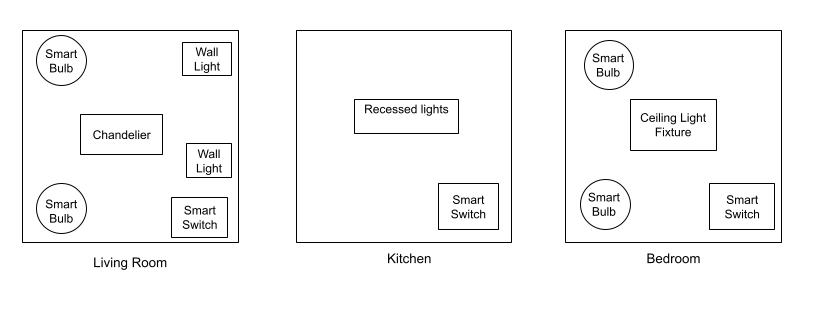
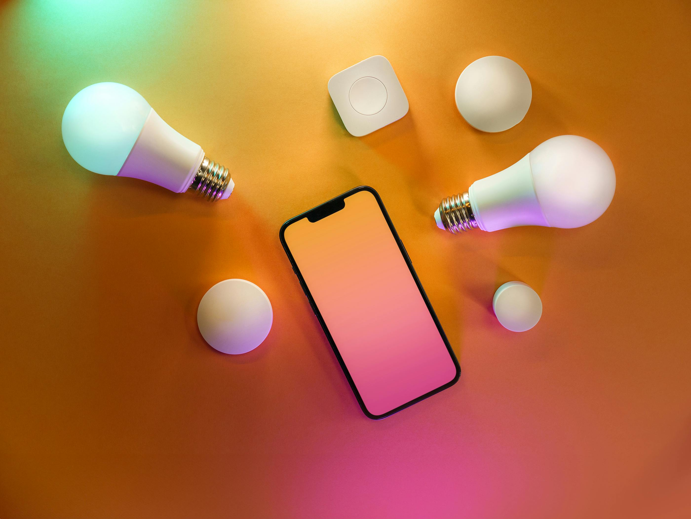
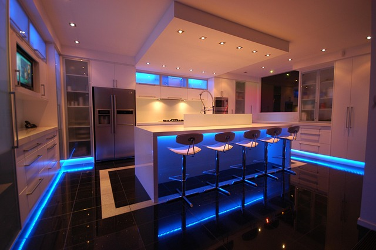
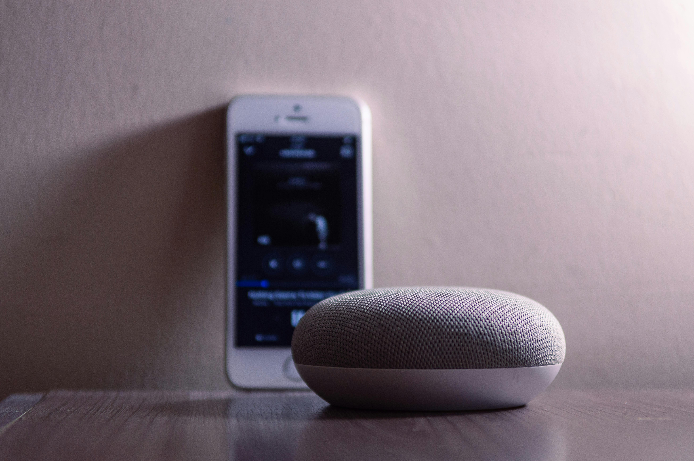
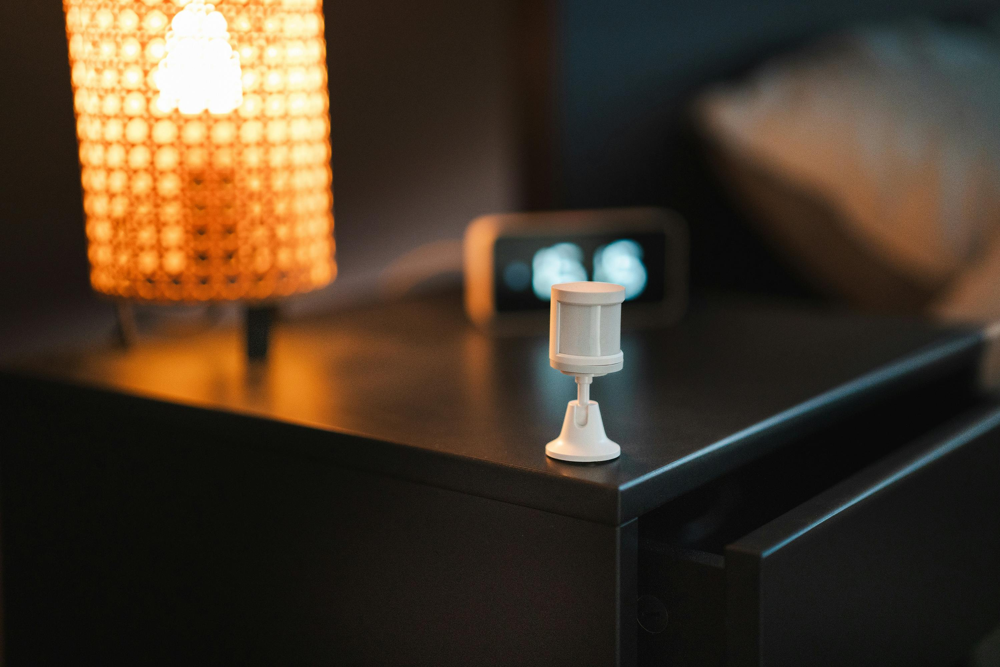
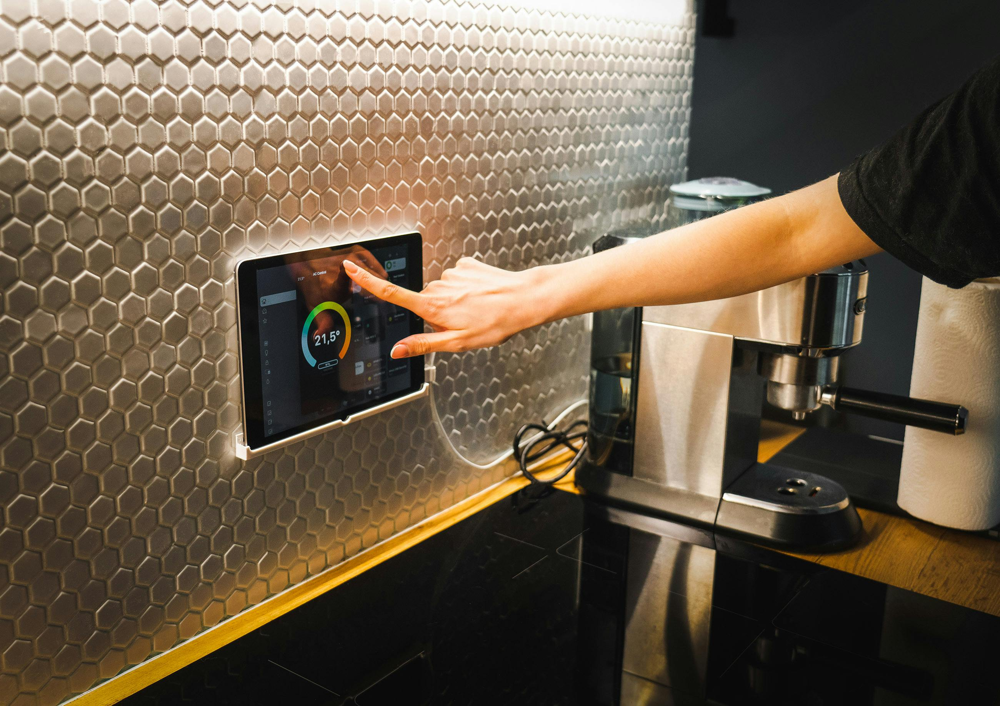
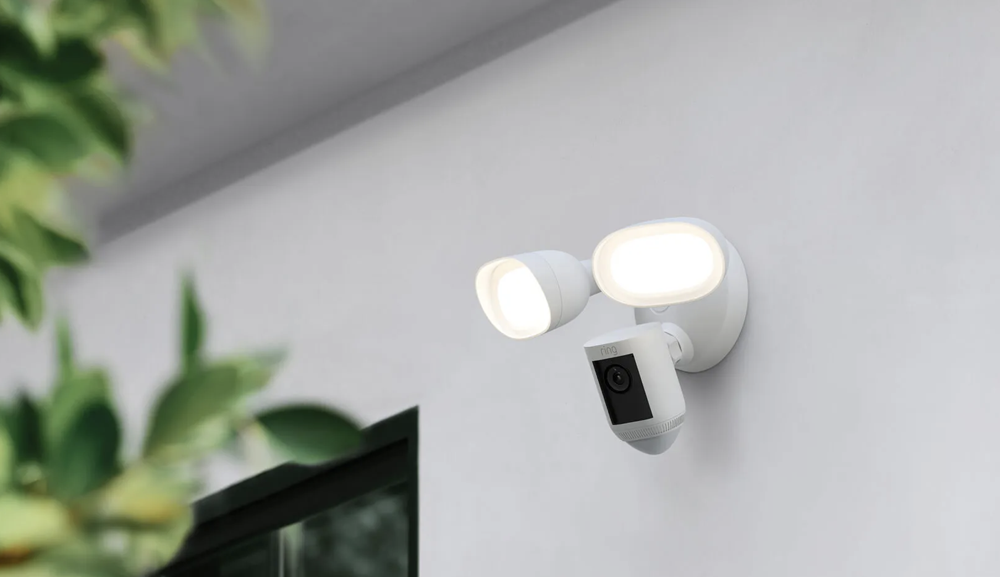

What is Smart Lighting?
Smart lighting is a system that can be controlled wirelessly through an app on a smart phone, voice assistant, remote control, or wall switch. Users can adjust, automate, and customize features to suit their lifestyle needs.
Smart lighting solutions are able to meet the priorities of all users:
- Convenience
- Automation
- Safety
- Cost Savings
- Accessibility
- Customization
A smart lighting system consists of a smart lighting device and a control system.
- A smart lighting device is a smart bulb or smart switch.
- A control system includes several features:
- App or voice assistant
- Remote control
- Smart switch
- Apps and voice assistants provide the largest access to smart lighting features.
Smart lighting systems can be incorporated throughout your home in a variety of configurations.
Example of smart lighting scenarios for a living room, kitchen, and bedroom:

What are Smart Lighting Devices?
Smart lighting devices provide ways to control your lights remotely for a range of situations and needs. Each device has benefits and drawbacks to consider prior to installation.
What are Smart Bulbs?
Smart bulbs are LED bulbs embedded with wireless communication technologies. The technology inside the bulb connects to an app or voice assistant. The user communicates through the app or voice assistant.
Smart bulbs allow you to control the ambient lighting of your home with:
- lamps
- task lighting
- decorative lighting
Examples of smart bulb products:
| Benefits of Smart Bulbs: | Drawbacks of Smart Bulbs: |
|---|---|
|
|
What is a Smart Switch?
Smart switches provide control for lights that are hard wired into your walls or ceilings. Most smart switches require neutral wiring for installation. However, manufacturers have created on-wall smart switches that don't require neutral wiring.
Smart switches allow you to control your home's lighting fixtures:
- Recessed lights
- Chandeliers and pendant lights
- Wall lights and sconces
- Picture lights
- Vanity lights
A smart switch is controlled through:
- a wall switch
- a remote control
- an app or voice assistant.
Note: A smart switch's features are accessed through an app or voice assistant.
| Benefits of Smart Switches: | Drawbacks of Smart Switches: |
|---|---|
|
|
What is the Difference Between In-Wall & On-Wall Smart Switches?
In-Wall smart switches
In-wall smart switches require electrical wiring.
- A wired smart switch replaces an existing light switch and installs inside a wall.
- Neutral wiring is required.
Examples of in-wall smart switches:
- TP Link Kasa
- Feit Smart Wi-Fi Dimmer
- Leviton Z-Wave Dimmer
- Lifx In-Wall Smart Switches
- Lutron Caseta, RA2, RadioRA3, HomeWorks
| Benefits of In-Wall Smart Switches: | Drawbacks of In-Wall Smart Switches: |
|---|---|
|
|
On-Wall Smart Switches
On-wall smart switches are battery-powered:
- Mounts onto wall; covers existing light switch.
- Does not require neutral wiring.
Examples of on-wall smart switches:
- Lutron Aurora: Works with any Zigbee bulb.
- RunLessWire: Only works with Phillips Hue bulbs. Powered by kinetic energy.
- GE CYNC Wire-Free Smart Switch
- Leviton Decora Smart No-Neutral Dimmer: Supports bulb types: LED/CFL, Incandescent, MLV.
| Benefits of On-Wall Smart Switches: | Drawbacks of On-Wall Smart Switches: |
|---|---|
|
|
Smart Switches and Three-Way Switches:
Three-way-switches allow control of a light from two locations.
Common locations for three-way-switches:
- at the top and bottom of stairs
- at the ends of a long hallway
- in a room with multiple entrances
Examples of smart switches that support three-way switch arrangements:
- With neutral wiring:
- Kasa Smart 3 Way Switch, HS210 Kit
- Amazon Basics Smart Switch, 3-Way
- Caseta by Lutron DIVA 3-Way Smart Dimmer: This wireless product pairs with a wired Caseta smart switch.
- Without neutral wiring:
Ask about support and warranty costs of installation:
- Read product specs and installation guides carefully to see if the smart switch is compatible with your home.
Can I Combine Smart Bulbs with Smart Switches?
Traditionally, smart bulbs and smart switches have not been compatible. Until recently, the smart switch market only consisted of "in-wall" smart switches. In-wall smart switches are reliant on neutral wiring. They are designed to work with regular bulbs.
What is the problem with combining in-wall and on-wall smart switches?
- Combining smart bulbs with in-wall smart switches may cause instabilities in your lighting system such as: flickering, flashing, strobing, or buzzing.
To combine the features of smart bulbs with smart switches, look for on-wall smart switches as a solution.
- On-wall smart switches are designed for smart switches and smart bulbs to work together.
- When combined into one system, smart switches can enhance a smart bulb's features.
- Combine the power of smart switch control with the customization of color and color temperatures.
- Scenario: Schedule a scene through your smart switch to turn the lights in your bedroom to red at 8pm daily.
To ensure that the smart system is compatible with the specifications of your home:
- Read manufacturer guides before purchasing a lighting system.

Other Smart Lighting Products
If you're not in the market for investing in a complete ecosystem or smart lighting system, consider "one-off" solutions for your home:
- Smart downlights
- Smart LED strips & tape lights
- Smart security lights
- Smart floodlights

What are Voice Assistants and Comprehensive Smart Systems?
Voice assistants and comprehensive home solutions are elements that provide more control over smart lighting systems. A lighting system can be controlled by a voice assistant anywhere in your home as long as you are within earshot of the voice assistant's device. Comprehensive smart home solutions can provide centralized control over an unlimited number of smart devices. Comprehensive smart home solutions use voice assistants as a control feature in their systems.
Voice Assistants
A voice assistant is software that translates voice commands to automate and perform tasks. Voice assistants can be used to control all functions of a lighting system (smart switch or bulb).
Examples of Voice Assistants that Integrate with Smart Lighting Systems:
| Voice Assistant | Ecosystem* | Protocol* |
|---|---|---|
| Amazon Alexa | Amazon Echo | Matter over Wi-Fi , Matter over Thread, Zigbee |
| Google Assistant | Google Nest | Wi-Fi , Weave |
| Siri | Apple HomeKit | HAP (HomeKit Accessory Protocol), Thread for iOS 15.0 and later, Matter for iOS 16.1 and later |
*Ecosystem: a network of devices that share the same protocol (e.g., all devices in the Amazon Echo ecosystem use the Matter protocol).
*Protocol: a standard smart devices use to transmit and receive wireless data.
Note: Communication protocols can vary between voice assistants and smart devices. Smart hubs can bridge different protocols and allow them to communicate together.
Smart Lighting Systems with Comprehensive Smart Home Solutions
Whole home solutions aim to provide seamless integration for all wireless devices in your home. They are luxury solutions that require services of certified dealers, design consultants, and professional installers to ensure the highest quality and experience.
Whole home solutions are a premium product with high costs. Service costs may not be included with installation costs.
Examples of comprehensive smart home solutions:
- GE Savant - Integrates with a large variety of smart home devices. Provides the widest selection of home automation solutions.
- Lutron - Lutron's automated home solutions include lighting, shades, and fan controls. Lutron uses their own proprietary wireless standard called ClearConnect to connect their hubs to their devices. Lutron does not offer a security system with their product lines.
- Lutron's smart lighting product line includes:
| Benefits of Whole Home Solutions: | Drawbacks of Whole Home Solutions: |
|---|---|
|
|

Accessibility: Features and Considerations
Smart lighting and other smart products offer advantages and independence to a person with a disability.
Smart products provide visual, hearing, and mobile accessibility with enhancements like:
- Voice operation
- User-friendly interfaces
- Integrating motion sensors and visual alerts
- Adjustable color temperature and brightness
- Automating tasks and reminders
- Customizable scenes
To select a smart lighting solution for a person with vision, hearing, mobility, or cognitive disabilities consider:
- Is the system compatible with other assistive devices (like screen readers, voice assistants)?
- Does the app have a simple user interface? Is it easy to navigate? Does the interface use good conventions to eliminate confusion?
- Professional installation for complex needs.
It is crucial that systems are set up correctly to ensure consistency and quality for the unique needs of all users.

Professional Installation
Professional installation is expensive. Defer to professional help if you're unsure of the technical requirements needed to install systems safely. Whole home solutions may require a certified dealer to install and modify systems.
Consider professional installation for:
- Whole home solutions
- Accessibility needs
- Lack of tools or knowledge
Think about installation costs for:
- Labor (per hour rate of an electrician)
- Demo and installation
- Cost of product
Examples of products that need professional installation:
- GE Savant - Find a Dealer
- Philips Hue Installation Services
- Lutron - Contact a Residential Specialist
Ask about support and warranty costs of installation:
- Does installation cost come with support or troubleshooting service? If so, how long?

Home Security
Smart lighting systems offer a variety of security solutions for your home.
Examples of ecosystem products:
- Phillips Hue Smart Home Security
- Roku Smart Home
- Nest Smart Home
- WYZE Home Monitoring
- Ring Home Security Systems
Examples of one-off solutions - floodlights with camera:
- Philips Hue Secure Flood Light Camera
- Ring Floodlight Cam Wired Pro
- Roku Floodlight Camera
- Nest Cam with Floodlight
- WYZE Floodlight Camera
- Do I want to expand my smart lighting system to include security at a later time? If yes, choose a smart lighting product line that integrates with a smart home ecosystem.
- Assess where in your home you want or need security. Instead of investing in an ecosystem, a one-off solution may meet your needs.
If you're thinking about installing home security along with smart lighting in your home, consider:
Checklist
A smart home is an investment. Use this checklist to help compare and plan ahead before making a commitment.
- How much do I want to spend on smart lighting?
- Check your home's compatibility with the smart lighting product you're interested in. Tip: Narrow your product choices by assessing the requirements of your home alongside personal needs.
- What are the limitations/specifications of my home?
- Renters should not redo wiring. Tip: Look into smart bulbs or on-wall switches.
- Homeowners check for neutral wiring in homes built prior to 1990.
- With neutral wiring, you can install smart bulbs, in-wall switches, on-wall switches, or other smart lighting products.
- Without neutral wiring, look into smart bulbs or on-wall switches.
Do I want to expand my smart lighting into other parts of my home someday?
- If yes, start with smart bulbs that offer compatible product lines such as:
- Be aware of warranty and support for the current smart lighting product you're looking to invest in. Brands of smart lighting are often acquired by other companies. Consequently, product lines lose support from the original company.
- Read installation instructions before purchasing any smart lighting product(s). Tip: Search for installation guides on the product's retail site.
To Top